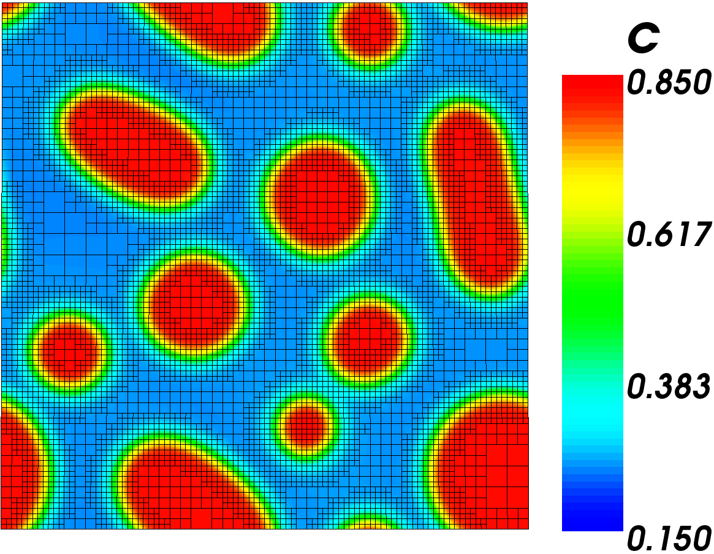

Step 3: Add Phase Decomposition to the Model
The input file for this step can be found here: s3_decomp.i
Changes to input file
We are going to change four things: The initial conditions, the solution time, we are going to add mesh adaptivity, and we will add more Postprocessors.
Initial Conditions
We know that the initial conditions should be 46.774 mol% chromium with minor variations. We will input this using random initial conditions.
[ICs]
[concentrationIC] # 46.774 mol% Cr with variations
type = RandomIC
min = 0.44774
max = 0.48774
seed = 210
variable = c
[]
[]
Note that the seed is the random number generator seed. It should not effect how the simulation behaves.
Solution Time
Before we were just running the simulation long enough to begin to see the behavior. Now we want to run it for the full seven days. We change this in the executioner block.
end_time = 604800 # 7 days
Mesh Adaptivity
In order to accurately calculate the phase interfaces, we need a relatively fine mesh. However, in the bulk of the phases we can significantly speed up the solution by using a coarse mesh. Luckily, MOOSE comes equipped to let us refine the mesh where we need extra accuracy and coarsen it where we don't. We change the mesh block to look like this:
[Mesh]
type = GeneratedMesh
dim = 2
distribution = DEFAULT
elem_type = QUAD4
nx = 25
ny = 25
nz = 0
xmin = 0
xmax = 25
ymin = 0
ymax = 25
zmin = 0
zmax = 0
uniform_refine = 2
[]
The basic mesh is 25 × 25 elements. This defines the coarsest the mesh can be. The uniform_refine option refines the mesh for the first time step to be a 100 × 100 element mesh. If we do not turn on mesh adaptivity, the mesh would remain 100 × 100 throughout the simulation and it would be the exact same mesh we have used already.
To add mesh adaptivity, we go back to the executioner block, add the adaptivity sub-block, and tell it we want the maximum refinement level to be two factors finer than the coarsest mesh allowed.
[Executioner]
type = Transient
solve_type = NEWTON
l_max_its = 30
l_tol = 1e-6
nl_max_its = 50
nl_abs_tol = 1e-9
end_time = 604800 # 7 days
petsc_options_iname = '-pc_type -ksp_grmres_restart -sub_ksp_type
-sub_pc_type -pc_asm_overlap'
petsc_options_value = 'asm 31 preonly
ilu 1'
[TimeStepper]
type = IterationAdaptiveDT
dt = 10
cutback_factor = 0.8
growth_factor = 1.5
optimal_iterations = 7
[]
[Adaptivity]
coarsen_fraction = 0.1
refine_fraction = 0.7
max_h_level = 2
[]
[]
Postprocessors
With the mesh adaptivity turned on, we are now interested in how many elements the surface has. We can calculate this by turning the NumNodes Postprocessor on.
We are also interested in how the size of the time step changes throughout the simulation, so we add a TimeStepSize Postprocessor. We can also look at the number of iterations at each time step.
[Postprocessors]
[step_size] # Size of the time step
type = TimestepSize
[]
[iterations] # Number of iterations needed to converge timestep
type = NumNonlinearIterations
[]
[nodes] # Number of nodes in mesh
type = NumNodes
[]
[evaluations] # Cumulative residual calculations for simulation
type = NumResidualEvaluations
[]
[active_time] # Time computer spent on simulation
type = PerformanceData
event = ACTIVE
[]
[]
Simulation Results

Decomposition Results - Mesh shown
The image to the right is of the results of this simulation. The mesh is shown to see how adaptivity effects the mesh. The mesh remains fine where there is a large concentration gradient, but coarsens in large areas with little change.
We can see that the alloy did decompose into the two phases and that the phases are forming circles. This means our model is likely good. Depending on your random variations in the initial condition, you may also have circles or you could have a stripe through the surface.
Next we are ready to input the mobility as a function and to see and how much of the surface is devoted to each phase.